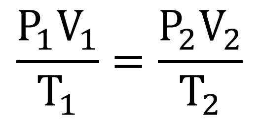

Gas Laws
Boyles's Law
- Boyle’s Law: at constant temperature, pressure is inversely proportional to volume.
Charles' Law
- Charles’ Law: at constant pressure, volume is directly proportional to temperature.
Avogadro’s Law
- Avogadro’s Law: at constant temperature and pressure, volume is directly proportional to the number of moles of gas present.

Gay-Lussac’s Law
- Gay-Lussac’s Law: at constant volume, pressure is directly proportional to temperature.

Combined Gas Law
Ideal Gas Law
Dalton’s Law of Partial Pressure

Drawing Lewis Structures
- The least electronegative atom is placed in the middle.
- Any nonmetal from period 3 and beyond can disobey the law of having an octet. Those elements can have more than 4 electron clouds. Only B and Be can have less than 4 electron clouds.
- Use the formal charge formula. The formal charge of each atom should be minimized. The total formal charges should be equal to the charge of the atoms or ions.
- The negative formal charge should go to the most electronegative atom.
Hybridization
- It occurs when atomic bonds used electrons rom both the s and p orbitals, creating an imbalance in the energy levels of the electrons. To imbalance the energy levels, the s and p orbitals involved are combined to create hybrid orbitals.
- There are three hybrid orbitals you need to know about: sp, sp2, and sp3. To figure out which hybrid orbital represent a certain atom, count how many electron clouds the atom has. The amount of electron clouds should be equal to the number of exponents of the s and the p.